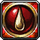
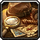
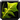
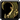
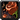
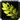
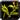
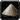
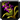
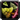

Here, you'll find profession leveling and farming guides for MoP Classic. They're focused on efficiency, so you won't waste gold on overpriced materials or spend more time than you need. Just follow the steps to level up fast and farm the best spots with the least effort.
For a full overview of all profession perks, updates, and reputation recipes, check out my MoP Classic Professions guide:
Bonuses, Perks, and Reputation Recipes
Profession Leveling 1-600

First Aid
ArchaeologyFarming Guides
These farming guides are designed to help you gather materials you may need for leveling your chosen professions.
Mists of Pandaria
Cataclysm
Herbs
Wrath of the Lich King
Herbs
Elementals
Ores, Cloth, Leather
Burning Crusade
Herbs
Motes
Leathers
Classic
These guides were originally created for retail WoW, but they can still be used for MoP Classic. However, some parts might not work exactly as intended.
Herbs

Silverleaf- Peacebloom

Briarthorn
Mageroyal
Stranglekelp
Bruiseweed

Grave Moss- Wild Steelbloom

Kingsblood- Liferoot

Fadeleaf- Goldthorn